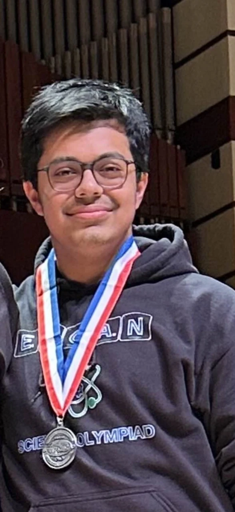
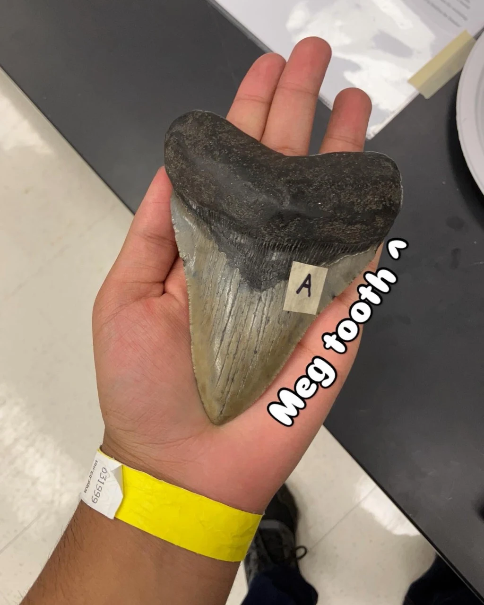
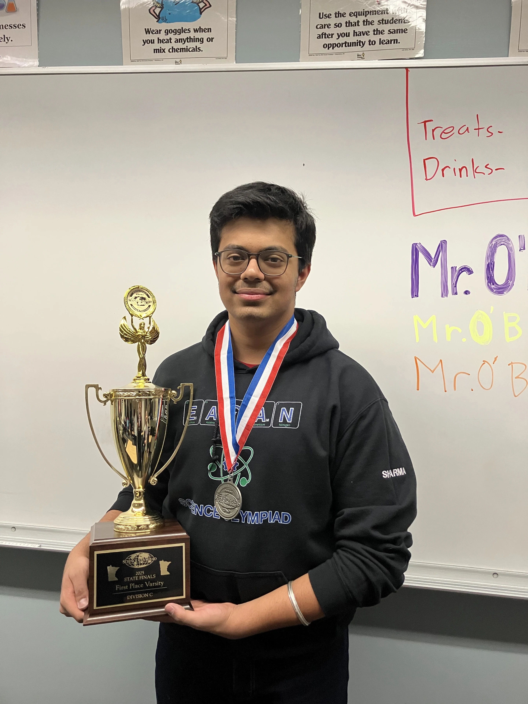
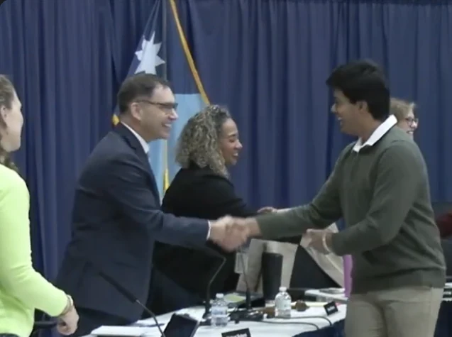
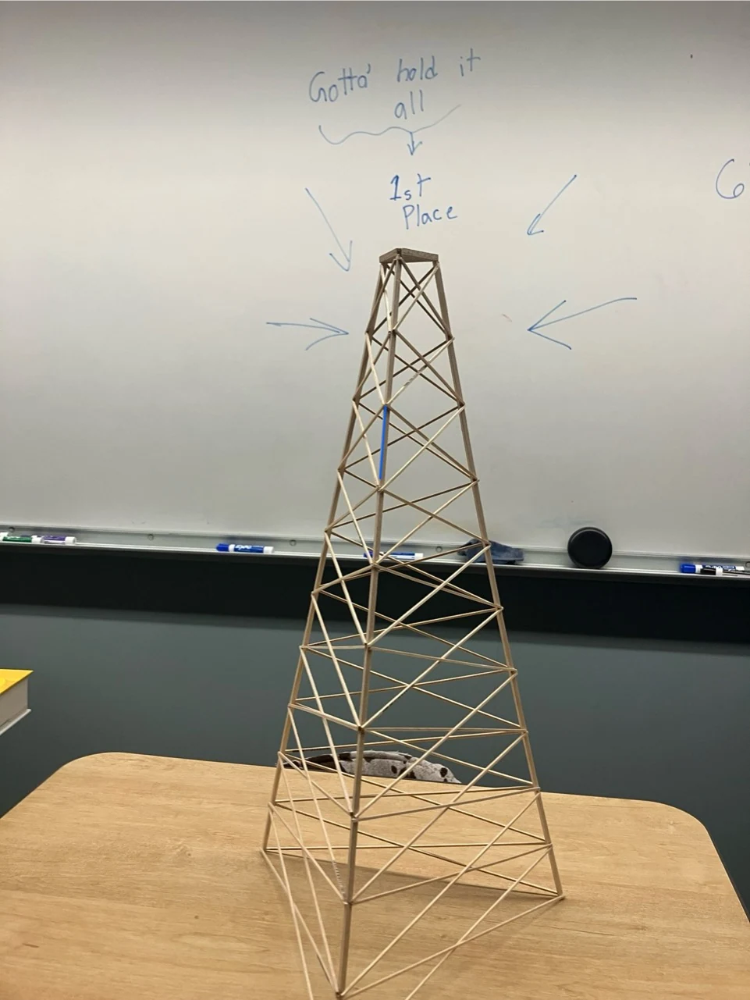

COMPETITION · STEM
April 2023 – November 2025 · Varsity competitor: grades 9–10 · Elementary event lead: grades 9–11
Science Olympiad.
Varsity competitor · Elementary event lead · Outreach Chair
I competed at State and Nationals, led and co-led varsity events, and helped elementary tournaments run through test writing, grading, awards, and local team gatherings.
3 eventsVarsity events at State
24 teamsElementary Science Olympiad
48 studentsElementary Science Olympiad
Compete.
Create. Lead.
In ninth grade, our team qualified for State. As a sophomore, I competed in Towers, Fossils, and Geologic Mapping at State, and our team qualified for Nationals. In sophomore year, I also earned a varsity letter. At Nationals, I competed in the Engineering CAD trial event.
That year, Eagan formed its first eighth-grade Science Olympiad team. Varsity students were asked to guide the middle school team, and I helped guide them. In its first season, the Dakota Hills Middle School team placed second at State. Our high school team won the State title and qualified for Nationals for the first time in team history.
District 196 recognized both teams at its April 14, 2025 regular board meeting, alongside other honorees. The meeting video records that recognition, and Sun Thisweek covered the teams’ results.
In sophomore year, I was co-lead for Codebusters and Geologic Mapping and lead for Fossils. As a junior, I co-led Codebusters and led Engineering CAD. I also held the Outreach Chair position for Elementary Science Olympiad, planning local events where our team could get together. That work was about organizing gatherings for teammates; it was separate from the public-facing robotics outreach I did with Team 2220.
In junior year, I helped with early-season setup but stepped away before competition and did not compete.
I also supported elementary events. In ninth grade, I helped write the Rock Hound test. As a sophomore, I ran the Roller Coaster test. In sophomore and junior years, I helped grade Starry, Starry Night exams; in freshman and sophomore years, I helped distribute awards based on student results. These events served 24 teams and 48 students.
Top skills utilized
- STEM competition
- Test development
- Event leadership
- Tournament operations
COMPETITION RECORD
Awards and
placements.
Freshman Year · 2024
Varsity Fossils
JV Codebusters
JV Fossils
Sophomore Year · 2025
Varsity Robot Tour
Varsity Fossils
Varsity Towers
Varsity Codebusters
Varsity Geologic Mapping
Scenes from
the process.




